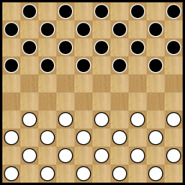
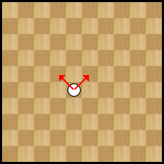
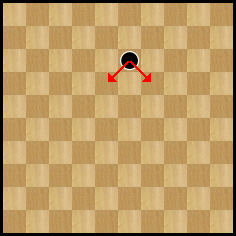
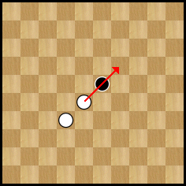
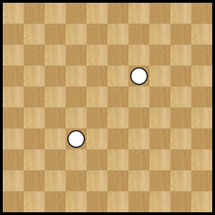

Le jeu de dames international se joue sur un damier carré divisé en 100 cases égales, alternativement claires et foncées.
Le jeu se joue sur les cases foncées du damier. Il y a donc 50 cases actives. La plus longue diagonale, joignant deux coins du damier et comprenant 10 cases foncées, se dénomme la grande diagonale.
Le damier doit être placé de sorte que la première case de gauche, pour chaque joueur, soit une case foncée.
Le jeu de dames international se joue avec 20 pions blancs (clairs) et 20 pions noirs (foncés). Avant de débuter une partie, les 20 pions noirs et les 20 pions blancs sont disposés sur les 4 premières rangées de chaque joueur.
Position initiale
La marche des pièces
Il existe deux types de pièces : les pions et les dames.
Le premier coup est toujours joué par les blancs. Les adversaires jouent un coup chacun à tour de rôle avec leurs pièces.
Un pion se déplace obligatoirement vers l’avant, en diagonale, d’une case sur une case libre de la rangée suivante.
 Voici deux exemple 
Lorsqu'il atteint la dernière rangée, le pion devient dame. Pour cela, on couronne le pion en plaçant dessus un deuxième pion de la même couleur.
La prise
La prise des pièces adverse est obligatoire et s’effectue aussi bien en avant qu’en arrière.
Lorsqu’un pion se trouve en présence, diagonalement, d’une pièce adverse derrière laquelle se trouve une case libre, il doit obligatoirement sauter par-dessus cette pièce et occuper la case libre. Cette pièce adverse est alors enlevée du damier. Cette opération complète est la prise par un pion.
 Un pion effectue une prise en passant au-dessus d'un pion adverse.
Il se rend alors sur la case suivante et enlève le pion adverse. 
Lorsqu’une dame se trouve en présence sur la même diagonale, directement ou à distance, d’une pièce adverse derrière laquelle se trouvent une ou plusieurs cases libres, elle doit obligatoirement passer par-dessus cette pièce et occuper, au choix, une des cases libres. Cette pièce est alors enlevée du damier. Cette opération complète est la prise par une dame.